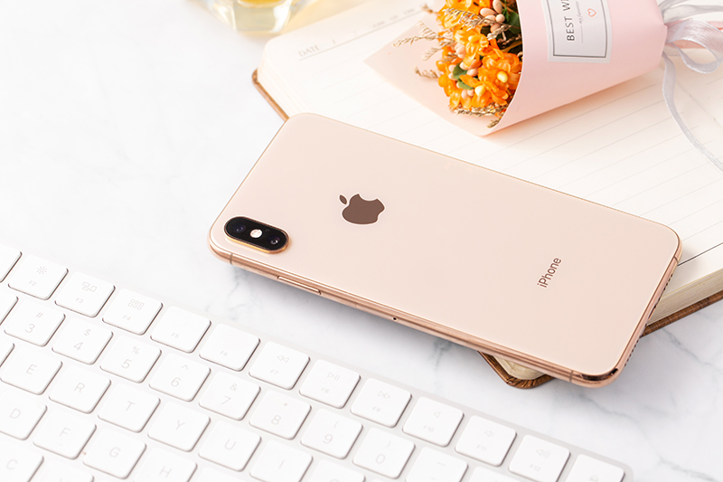

Điện thoại iPhone Xs Max 512GB

Iphone Xs Max 512G
39.990.000₫
Màn hình: 6.5", Super Retina
HĐH: iOS 12
CPU: Apple A12 Bionic 6 nhân
RAM: 4 GB, ROM: 512 GB
Camera: Chính 12 MP & Phụ 12 MP, Selfie: 7 MP
PIN: 3174 mAh
>> Là chiếc smartphone cao cấp nhất của Apple với mức giá khủng chưa từng có, bộ nhớ
trong lên tới 512GB, iPhone XS Max 512GB - sở hữu cái tên khác biệt so với các thế hệ trước, trang bị tới
6.5 inch đầu
tiên của hãng cùng các thiết kế cao cấp hiện đại từ chip A12 cho tới camera AI.
>> Màn hình OLED chất lượng cao rộng 6.5 inch đầu tiên của Apple
Với công nghệ Super Retina kết hợp tấm nền OLED trên iPhone XS Max đem lại dải màu sắc cực kì sống động và
sắc nét đến
từng chi tiết.
Bên cạnh đó, Apple còn tích hợp thêm công nghệ HDR10 cùng tần số cảm ứng 120 Hz giúp chất lượng hình ảnh
được nâng cao
và mượt mà hơn đáng kể.
Việc sở hữu màn hình lớn đem đến cho bạn khá nhiều tiện ích như dễ dàng chỉnh sửa ảnh, xem phim, lướt web
nhưng sẽ khó
khăn hơn trong việc di chuyển.
Camera kép tích hợp trí tuệ nhân tạo

Máy được trang bị hệ thống xử lý hình ảnh chất lượng cân bằng sáng, giảm nhiễu, tăng cường độ phơi sáng, màu
da sao cho
phù hợp và tự nhiên nhất.
Cùng với đó là khả năng điều chỉnh khẩu độ ấn tượng từ f/1.4 đến f/16 ngay trên bức ảnh sau khi chụp ảnh với
chế độ chân dung.

Chưa dừng lại ở đó, máy còn được tích hợp thêm công nghệ Smart HDR giúp tái tạo hình ảnh và cho ra một bức
hình với độ sáng tốt nhất.
Ngoài ra, iPhone XS Max còn được hỗ trợ bởi trí thông minh nhân tạo đem đến khả năng tự động điều chỉnh màu
sắc, độ sáng và độ tương
phản sao cho phù hợp với từng vật thể khác nhau.